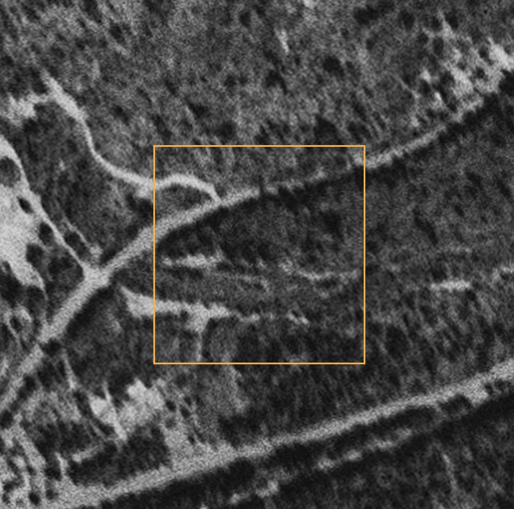
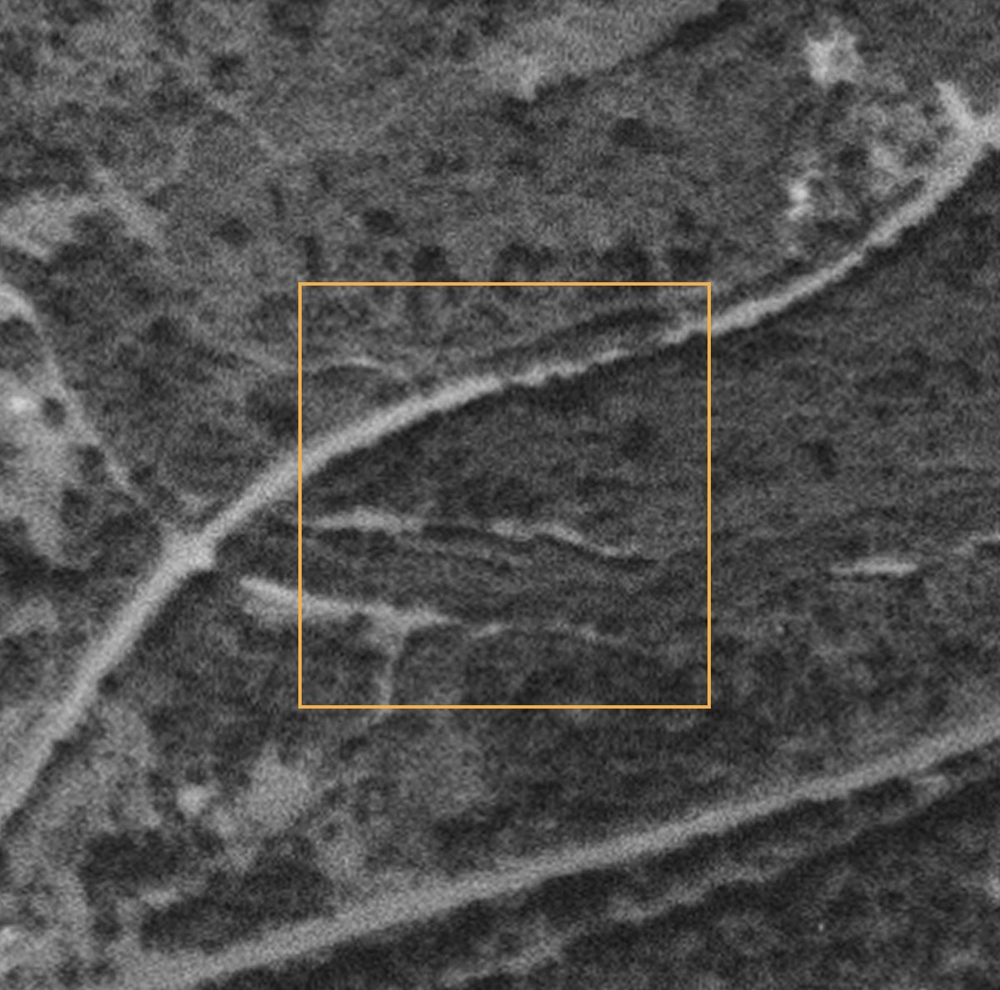

The Gorge Well Record
Neighbors using public records to find old oil and gas wells in the Gorge, so they can be sealed for good
Washington and Oregon have each kept records of oil and gas test wells for more than a century. Washington's file lists 830 wells drilled since 1890. Oregon's geologists catalogued the state's known attempts going back to its first oil venture in 1902.
In the six counties along the Columbia River Gorge, those records hold 17 test holes on both sides of the river, from a wildcat company west of Dufur before 1907 to a 12,430-foot hole near Alderdale in 2008. One of them, drilled in 1949 just west of Beacon Rock, is the only one inside the National Scenic Area. The record says it was drilled. It doesn't say it was ever sealed. That one line was enough to start an investigation anyone can join.
An old well is a hole drilled deep into the ground. If it was never sealed, gas can leak up, and water can move between underground layers, including the water people drink.
Sealing one is routine work, and public money exists to pay for it.
The hard part is knowing exactly where it is. That's the part neighbors can do.
What the states kept
On the Washington side, the Washington Geological Survey keeps the state's oil and gas well file. On the Oregon side, the Department of Geology and Mineral Industries (DOGAMI) keeps permit records back to the early 1950s. For earlier wells, it published a county-by-county list of every drilling attempt its geologists could document, first compiled in 1954 and revised in 1965.
Most wells here were dry holes, and neither state has had large-scale commercial oil production. But each attempt left a record: the company, the dates, the depth, what the driller saw on the way down, and sometimes what happened to the hole afterward.
In the six Gorge counties that record holds 17 test holes: seven in Washington (Clark, Skamania and Klickitat) and ten in Oregon (Multnomah and Wasco). Hood River County has none on record. Only one sits inside the National Scenic Area.
Anyone can browse Washington's records on the free Washington Geologic Information Portal, and Oregon's in DOGAMI's Oil and Gas Exploration in Oregon.
The record, both sides of the river
Read together, the two states' records span more than a century of people looking for oil and gas in and around the Gorge.
| Year | Well | Where | Depth | What the record says | Status on record |
|---|---|---|---|---|---|
| before 1907 | Dufur Oil Co., 5 holes | Wasco, OR · 5 mi west of Dufur on Fifteen-Mile Creek | about 500 ft | Listed from a 1921 geology report | Not in the permit database |
| 1907 | Beavis May Oil Co. | Wasco, OR · 10 mi west of Dufur on Ramsey Creek | 1,710 ft | Listed from a 1921 geology report | Not in the permit database |
| 1919 | Beavis May Oil Co. | Wasco, OR · about 200 ft from the 1907 well | 1,125+ ft | Listed from a 1921 geology report | Not in the permit database |
| 1931 | Gas-Ice Corp. Nos. 8, 10 and 14 | Klickitat, WA · near Klickitat | 160 to 248 ft | "Many developed springs and drilled wells producing carbon dioxide" | Drilled |
| 1937 | Aldercreek No. 1, Bluelight Gas and Oil Co. | Klickitat, WA · near Alderdale | 1,545 ft | Slight gas and poor oil showings | Drilled |
| 1946 | Barber No. 1, Richfield Oil Corp. | Multnomah, OR · Portland area | 7,885 ft | No significant oil or gas shows | Closed |
| 1949 | Kady-Olsen No. 1, Columbia River Oil Co. | Skamania, WA · west of Beacon Rock | 750 ft | Oil at 250 ft; artesian fresh water at 750 ft | Drilled |
| 1951–52 | Lambert No. 1, Kastle Oil & Gas Co. | Wasco, OR · 11 mi southwest of Dufur | 220 ft | Cable tools | Closed |
| 1957 | Kappler No. 1, Sunray Mid-Continent Oil Co. | Multnomah, OR · Portland area | 1,666 ft | No shows encountered | Closed |
| 1959 | Benedict No. 1, Adams-Benedict Oil Co. | Clark, WA · north Clark County | 2,578 ft | Dry hole | Drilled |
| 2008–09 | Gray 31-23, Delta Petroleum | Klickitat, WA · near Alderdale | 12,430 ft | A modern permitted deep test, fully documented | Plugged and abandoned |
Also in Oregon's report: a 1949 water well in East Portland that "hit gas at 799', which had a strong odor of oil." It wasn't drilled for oil, so it isn't counted in the 17. "Drilled" in Washington's file and "not in the permit database" in Oregon's both mean the same thing: no later record of what happened to the hole. "Closed" is Oregon's permit status.
Reading one line closely
Kady-Olsen's record is short, and every word of it is useful.
The location line is a surveyor's address. It narrows the well to one 10-acre square, about 200 m on a side. State Route 14 runs right through it, between mileposts 34.2 and 34.4.
Then we pulled the free USGS aerial photos from the years right after the drilling. In 1952, 1953 and 1955, the same pale tracks leave the highway on its downhill side, fork into a Y, and run into the square. Features that hold their shape across three years of photos are real lanes or clearings. Today Moorage Road runs down through this ground to Beacon Rock State Park's campground and boat launch, so the tracks may be an early version of that road. A drill crew in 1949 would have used whatever road reached flat ground near the river, so the well could sit right beside it. Finding out is the next step.
"Artesian fresh water" means the drill hit water under enough pressure to rise on its own. A hole like that, left open, can let groundwater layers mix or seep out at the surface. A proper plug is well understood and often paid for. What it needs first is someone knowing exactly where the well is. An old well beside a place people camp isn't unusual: in 2026 the Well Done Foundation plugged one at a youth camp in Pennsylvania.

July 1952
July 1955Where our record fits nationally
Across the country, the U.S. Geological Survey gathered 117,672 documented, unplugged orphan wells from the records of 27 states. An orphan well is one with no responsible owner left to close it. The 2021 federal infrastructure law set aside about $4.7 billion to find and plug them, most of it through state programs.
State records like these are what that list is built from. Neither Washington nor Oregon is one of the 27 states on it, so their older wells, like Kady-Olsen and the Dufur wells, live in each state's own file.
Washington wells do get plugged this way. The Well Done Foundation, a nonprofit that plugs orphan wells, took on Barlow #001, a 1964 well near the old Oil City area on the Olympic Peninsula, after the landowner's family reached out.
Many of the wells on the national list sit on land the public already owns. We matched the list to the national Protected Areas Database, and 5,767 of them are on federal or state land: national forests, state forests and game lands, wildlife refuges, and parks. Those are places where hikers and neighbors can help check, with the land managers' permission.
Orphan wells on public land, by land manager
How the investigation works
Every step starts from a record that already exists, and every tool is free. Together they cover the first stage of how a group like the Well Done Foundation takes on a well: building its history and location profile, then checking it in the field. That's the legwork that has to happen before a well can be adopted and plugged.
- Read the well fileThe state's record gives the company, year, depth and status.
- Map the legal descriptionSection, township and range narrow it to a square on the ground.
- Check who manages the landCounty parcels and public-lands data say who to ask.
- Pull the old photosUSGS aerials from the drilling era show what was there.
- Look under the treesLidar maps show flat pads and old road cuts beneath the forest.
- Check the groundWith permission, photograph and log what's there. Touch nothing.
- Report itPrecise locations go to the state and to groups that plug wells.
About this project
Open Gorge is a neighbor-built, neighbor-run project that connects public data to real issues affecting people and land in the Columbia River Gorge.
This investigation starts from a record about a place many of us drive past, and it depends on people who know the ground: who remembers what, which track goes where, and who to ask. The records are public. The knowledge that makes them useful is local.
How to take part
You don't need to be an expert. Pick the part that sounds fun.
Please don't go looking on your own. The square sits between a busy highway and an active railroad, near homes, on land held by several public owners. Field visits happen only with the land managers' permission, and nobody digs, opens or touches anything.
Every record here is public, and every tool is free. What it takes is people who live here. Want in? Reach out through Open Gorge.
Read old news
Local papers from 1949 may have covered an oil strike near Beacon Rock. So might a letter or a family story.
Search the deeds
The well is named for the landowners. County deed records under Kady and Olsen can show whose land it was.
Compare photos
Help check other flights and years for the same tracks, and look at lidar for a flat pad cut into the slope.
Walk the ground
Once permission is in hand: grid walks, GPS points and careful photos. A metal detector can flag buried steel without digging.
Remember it
If you or your family knew of "the oil well" out by Beacon Rock, we'd love to hear from you.
Try it where you live
The same steps work in any county with a well file. Here's what we used, in the order we used it.
- Washington Geologic Information Portal: the state's oil and gas well records, on a map. Other states keep their own; search for your state's oil and gas regulator.
- USGS orphan well dataset: the national list, free to download.
- USGS EarthExplorer: historic aerial photos back to the 1930s and 1940s. Search "Aerial Photo Single Frames."
- Washington Lidar Portal: bare-earth maps that show the ground under the trees.
- PAD-US: who owns and manages public land, nationwide.
- Well Done Foundation: a nonprofit that plugs orphan wells and works with landowners and communities.
Sources and method
- Well records: Washington DNR, Washington Geological Survey, oil and gas wells database (830 wells, 1890 to present), queried September 2026.
- Oregon wells: DOGAMI permit records (Oregon Oil and Gas Viewer, 2021) and Miscellaneous Paper 6, Oil and Gas Exploration in Oregon (compiled by R.E. Stewart, 1954; revised by V.C. Newton Jr., 1965), which cites Buwalda (1921) for the Dufur-area wells. Washington figures also cover Clark County.
- Legal description: BLM Public Land Survey System grid. Mileposts: WSDOT state route milepost data.
- Aerial photos: USGS single frames via EarthExplorer. July 28, 1952 (GS-QM 1-1); September 4, 1953 (GS-WM 77); July 20, 1955 (GS-VJQ 2-64). Today's view: USDA National Agriculture Imagery Program (NAIP), via USGS. Open Gorge lined up the old frames with today's imagery using fixed landmarks. The fit is good to about 20 to 50 m.
- National list: USGS Documented Unplugged Orphaned Oil and Gas Well dataset (2022, doi:10.5066/P91PJETI). Public land: USGS PAD-US 4.1 fee ownership. Federal funding: U.S. Department of the Interior Orphaned Wells Program.
- Well Done Foundation: plugging process, Barlow #001 and the Volant, Pennsylvania youth camp project.
- County lines: U.S. Census TIGERweb. Scenic Area boundary: U.S. Forest Service.
- Independent analysis by Kate Bertash for the Skamania Dispatch and Open Gorge. Nobody paid for it, and anyone can use it.